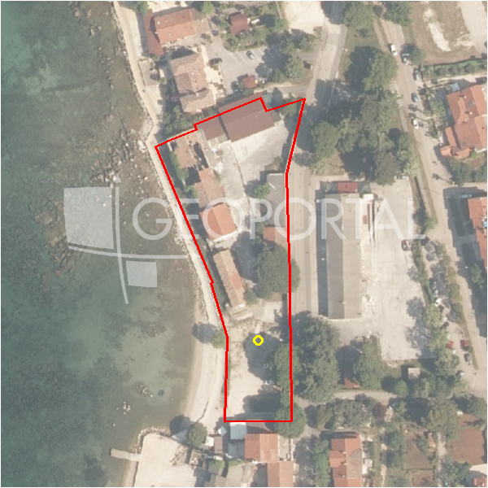

#39199 · Istra, Poreč, zemljište 5.716 m2
Poreč, Poreč, Istarska · zemljiste · njuskalo · status active · oglas ↗
Ocjena
- Score
- 56 rule 56 · LLM – · 12.09.2026.
- RLV
- 3,14 M€ (673 €/m²) · ratio 5,29
- Ukupna investicija
- 9,22 M€
- GBP
- 3.356 m²
- Feedback
- –
- CRM
- –
Oglas
- Cijena
- 593.000 € (104 €/m²)
- Površina
- 5.716 m² · DKP 4.662 m² (odstupanje -18,4 %)
- Prodavatelj
- agencija · FOUR Nekretnine
- Prvi put
- 11.09.2026. · zadnje 11.09.2026. · 0 d na tržištu
Povijest cijene
| Datum | Cijena |
|---|---|
| 11.09.2026. | 593.000 € |
Flagovi
natura_uz_gradnju Natura/zaštićeno područje uz građevinsku zonu — posebni uvjeti (−5)zop_70_100 ZOP pojas 70/100 m (−10)
zgrade_bez_rusenja zgrade na čestici bez spomena rušenja (−10)
zone_uncertainty zona nije pregledana (reviewed: false) (−5)
parcelacija fazni projekt / parcelacija
llm_pending LLM ekstrakcija/ocjena nedostupna
Komponente score-a
| rlv | {'gbp': 3356.4456, 'kis': 0.8, 'nkp': 2517.3342000000002, 'noi': None, 'rlv': 3137182.1428695666, 'ratio': 5.290357745142608, 'value': None, 'phases': 2, 'profile': 'obala_visestambeno', 'gdv_neto': 14097071.520000001, 'cost_soft': 671289.1200000001, 'gdv_bruto': 17621339.400000002, 'kis_known': False, 'total_inv': 9221080.736000001, 'cost_build': 6712891.2, 'cost_other': 1208320.4160000002, 'cost_sales': 528640.182, 'demolition': False, 'gbp_source': 'kis', 'rlv_per_m2': 672.9652173913047, 'parcel_area': 4661.73, 'parcelation': True, 'roi_on_cost': 0.47145781784856505, 'profit_at_ask': 4347350.602000001, 'cost_demolition': 0.0, 'total_inv_phase': 4924830.368000001, 'parcel_area_effective': 4195.557, 'sale_price_per_m2_nkp': 7000.0} |
| hard | [] |
| info | ['parcelacija', 'llm_pending'] |
| rubric | {'permits': {'max': 5.0, 'detail': {'permit': 'none'}, 'points': 0.0}, 'location': {'max': 15.0, 'detail': {'source': 'rlv.yaml:istra_zapad/row1', 'sale_price_per_m2_nkp': 7000.0}, 'points': 15.0}, 'physical': {'max': 4.0, 'detail': {'slope_pct': 6.67, 'slope_points': 2.0, 'sea_row1_bonus': True}, 'points': 3.0}, 'liquidity': {'max': 3.0, 'detail': {'n_cuts': 0, 'points_cut': 0.0, 'points_days': 0.008333333333333333, 'seller_type': 'agencija', 'points_fresh': 0.5, 'price_cut_pct': None, 'days_on_market': 1, 'points_private': 0}, 'points': 0.51}, 'rlv_ratio': {'max': 25.0, 'detail': {'rlv': 3137182, 'ratio': 5.29, 'asking_price': 593000.0}, 'points': 25.0}, 'ticket_fit': {'max': 10.0, 'detail': {'asking_price': 593000.0}, 'points': 10.0}, 'zone_quality': {'max': 8.0, 'detail': {'reason': 'zona nepoznata', 'source': 'nepoznato', 'zone_class': None}, 'points': 2.0}, 'profit_potential': {'max': 20.0, 'detail': {'roi_on_cost': 0.471, 'profit_at_ask': 4347351}, 'points': 20.0}, 'price_vs_benchmark': {'max': 10.0, 'detail': {'source': 'auto:Poreč', 'deviation': 0.403, 'ask_eur_m2': 104, 'benchmark_eur_m2': 173.89}, 'points': 10.0}} |
| weights | {'llm': 0.4, 'rule': 0.6, 'model': 0.0} |
| penalties | {'zop_70_100': 10, 'zone_uncertainty': 5, 'natura_uz_gradnju': 5, 'zgrade_bez_rusenja': 10} |
| raw_score | 85,5 |
| rlv_notes | ['parcelacija: > 2500 m² → fazni projekt, −10 % površine, +5 % soft', 'fazni projekt: 2 faze; investicija prve faze 4,924,830 €'] |
| flag_notes | {'natura': True, 'phases': 2, 'max_gbp': 3356, 'zop_band': '70', 'total_inv': 9221081, 'zone_code': None, 'zone_class': None, 'zone_known': False, 'zone_source': 'nepoznato', 'zone_reviewed': None, 'protected_area': False, 'buildings_share': 0.319, 'total_inv_phase': 4924830} |
| caps_applied | [] |
GIS
- Čestica
- k.o. 323748, k.č. 3859 (pin_buffer, 0,81); k.o. 323748, k.č. 3837 (pin_buffer, 0,78); k.o. 323748, k.č. 3839 (pin_buffer, 0,73)
- Zona
- – (–)
- kig / kis / katnost
- – / – / –
- GP / UPU
- – · UPU –
- Pristup / nagib
- unknown · 6,7 % (max 11,3 %)
- More
- 6 m · red 1 · ZOP 70
- Zaštite
- Natura da · zaštićeno ne · kulturno dobro ne
- Zgrade na čestici
- 32 %
- Match
- 0,81
Karta
Ortofoto (DOF)

RLV kalkulacija — pretpostavke
| gbp | {'value': 3356.4456, 'source': 'kis'} |
| kis | {'value': 0.8, 'source': 'default_profila'} |
| sea_row | {'value': '1', 'source': 'gis'} |
| soft_pct | {'value': 0.1, 'source': 'profil+parcelacija'} |
| nkp_ratio | {'value': 0.75, 'source': 'profil'} |
| cost_other | {'value': 1208320.4160000002, 'source': 'profil: doprinosi+uređenje po m² GBP, financiranje+rezerva % gradnje'} |
| parcel_area | {'value': 4661.73, 'source': 'dkp'} |
| asking_price | {'value': 593000.0, 'source': 'oglas'} |
| margin_on_cost | {'value': 0.15, 'source': 'profil'} |
| build_cost_per_m2_gbp | {'value': 2000.0, 'source': 'profil'} |
| sale_price_per_m2_nkp | {'value': 7000.0, 'source': 'rlv.yaml:istra_zapad/row1'} |
| transfer_tax_and_acquisition | {'value': 0.06, 'source': 'profil'} |
Ekstrakcija iz oglasa
| utilities | ['struja', 'voda', 'kanalizacija'] |
| floors_claim | P+1 |
Benchmarks mikrolokacije
| Vrsta | Vrijednost | n | Od | Izvor |
|---|---|---|---|---|
| land_ask_eur_m2 | 174 | 302 | 11.09.2026. | auto |
| newbuild_sale_eur_m2_nkp | 3.695 | 8 | 11.09.2026. | auto |
Opis oglasa
Prodaje se atraktivno zemljište površine 5.716 m2, od čega je 3.317 m2 građevinsko. Parcela se nalazi svega četiri kilometra od mora, s prekrasnim pogledom na more i šumu koji se posebno otvara s budućeg prvog kata. Na terenu se već nalaze priključci za vodu i kanalizaciju, dok su asfaltna cesta i struja udaljene svega 20 metara , a ova nekretnina predstavlja izvrsnu investicijsku priliku za gradnju vila s bazenima – predviđena je mogućnost izgradnje 5 luksuznih vila, svaka sa svojim dvorištem i bazenom. Također, s obzirom na opseg zgrade od oko 150 m, postoji mogućnost izgradnje objekta P+1, ukupne površine od 300 m2, ili 5 kuća s ukupno 10 stanova, pri čemu bi svaki kat bio zaseban stan od približno 150 m2, s vlastitim dvorištem i bazenom. Zahvaljujući veličini, pogledu na more, postojećoj infrastrukturi i odličnom položaju, ovo zemljište nudi jedinstvenu priliku za investiciju u jednom od najtraženijih dijelova Poreča. Poštovani klijenti, agencijska provizija naplaćuje se u skladu s Općim uvjetima poslovanja. ID KOD AGENCIJE: T1423 Ured Istra Fontička ulica 3, Pula Mob: +385994441443 E-mail: info@four-nekretnine.hr www.four-nekretnine.hr